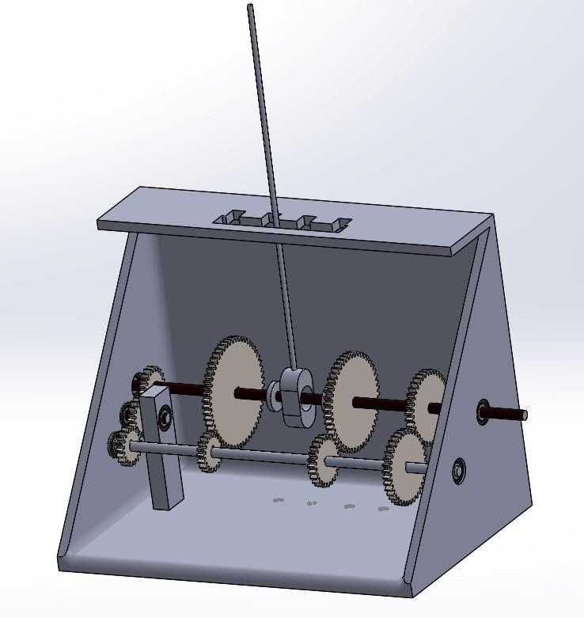

First-Year Design Project (2023)
A manual gearbox system, also known as a manual transmission, is a type of transmission used in vehicles that requires the driver to manually shift gears using a gear lever and clutch pedal. It allows for more control over the vehicle's speed and power delivery. The gears are engaged and disengaged to change the speed and torque of the vehicle.
The project entitled "Fabrication of Manual Gearbox System" is dedicated for designing and fabrication of a gearbox prototype. Rooted in historical context and technological advancements, the project involves meticulous material selection, gear ratio determination, and the innovative use of 3D printing with PLA for gear manufacturing.
Objectives include optimizing efficiency, enhancing durability, and ensuring a user-friendly design with ergonomic considerations. The project serves as an application of knowledge gained in the first semester and aims to provide a hands-on learning experience in gears, applying theoretical insights from coursework.
While not intended for future commercial use, the project contributes to understanding mechanical principles, offering practical applications of knowledge, and creating a valuable educational tool for gear systems and their fabrication.